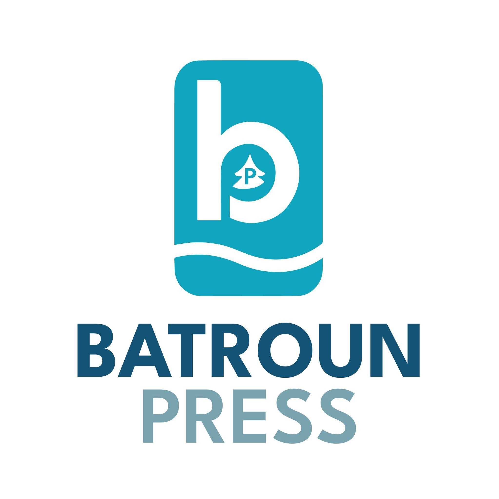

Friday, March 15, 2024
10:30 AM
Batroun
Press
الأخبار اليومية والشؤون الجارية
آخر الأخبار
محلي
عالمي
أعمال
رياضة
ترفيه
صحة
العودة للرئيسية
مراسل بترون برس
صحفي متخصص في أخبار المنطقة والشؤون المحلية
شارك المقالة
فيسبوك
تويتر
واتساب
مقالات ذات صلة
تطورات جديدة في مشاريع البنية التحتية
أخبار محلية
•
منذ يومين
مبادرات الاستدامة البيئية في المنطقة
بيئة
•
منذ 3 أيام
فعاليات ثقافية وفنية قادمة
ثقافة
•
منذ أسبوع